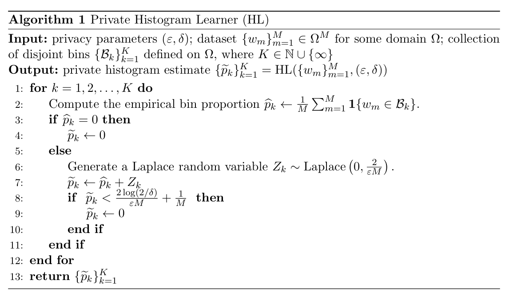
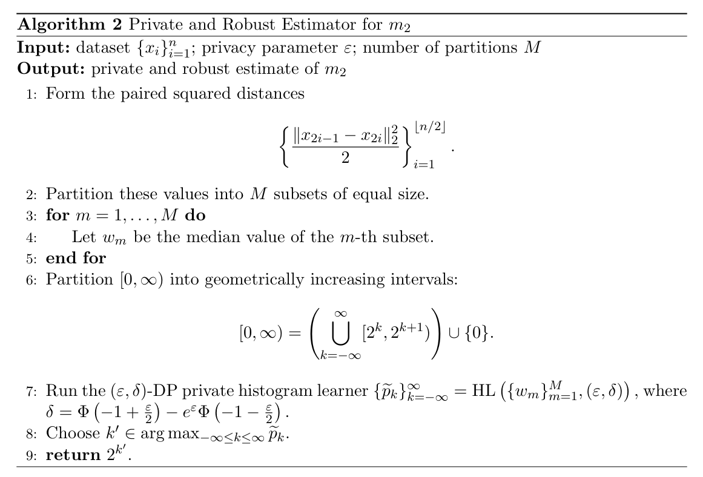
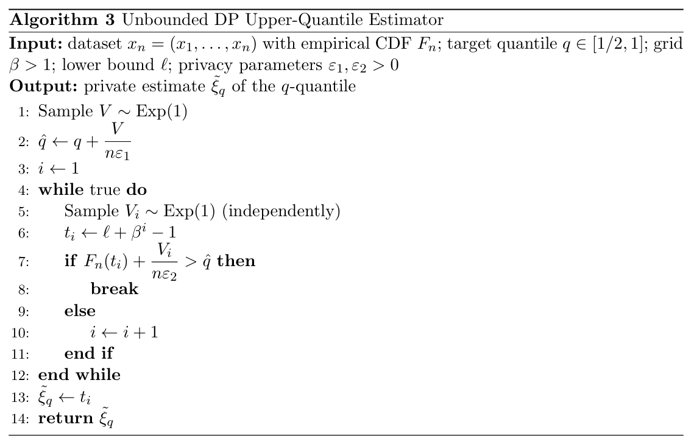
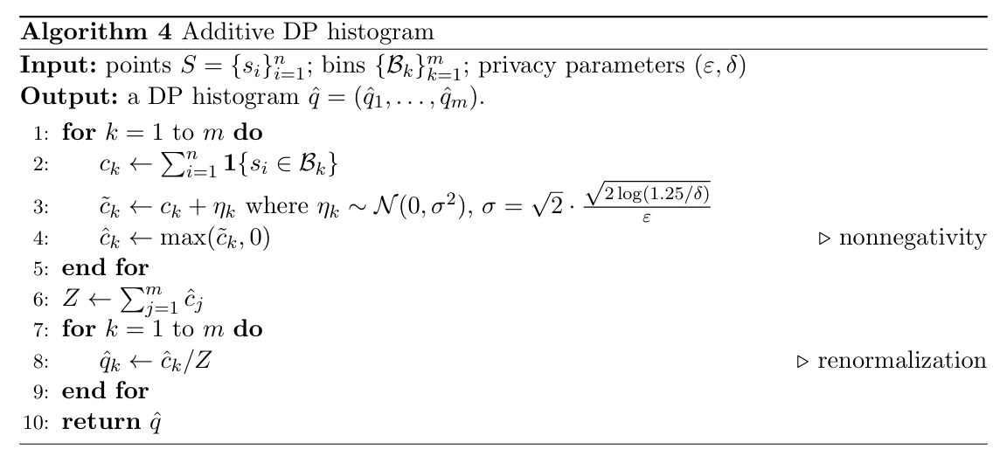
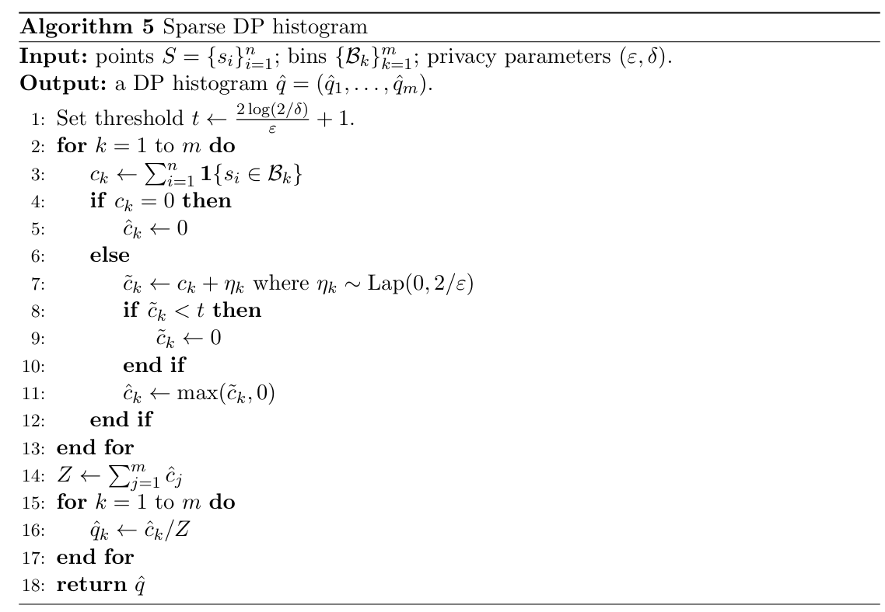
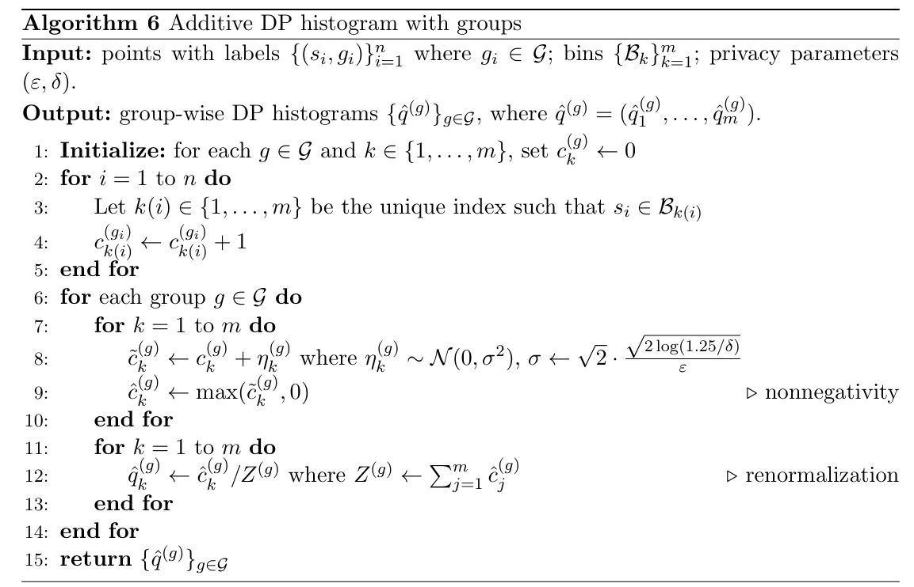
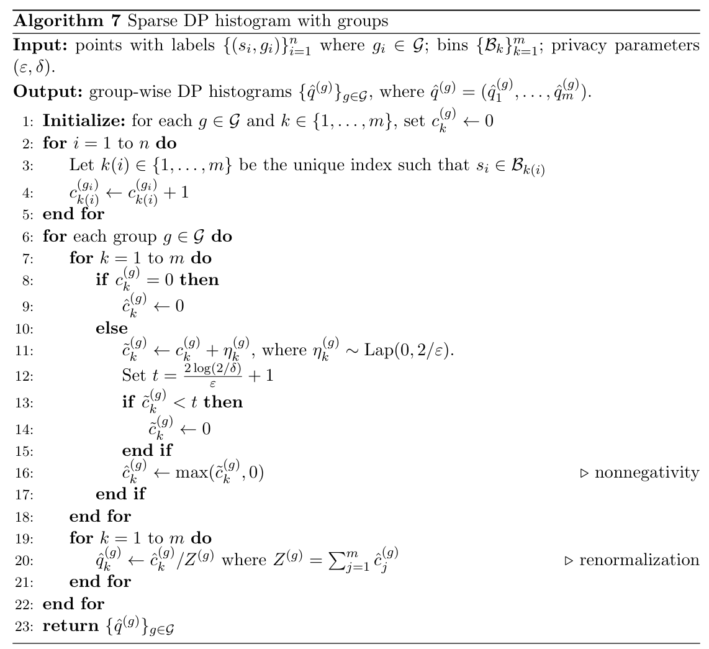

This page collects the algorithms used in the dppca
package. The algorithms are included as images from the
figures/ folder.
Algorithm 1: Private histogram learner
The private histogram learner is used as an auxiliary routine for privately identifying the scale of a one-dimensional collection of values. In our setting, it is used in the private scale-proxy step for the Huber scree estimator, following the construction used by Yu, Ren, and Zhou (2024).

Algorithm 2: Private and robust estimator for
This algorithm privately estimates the second-moment scale , which is needed to choose the Huber robustification parameter . It uses pairwise squared distances, block medians for robustness, and the private histogram learner above to select a dyadic scale level.

Algorithm 3: Unbounded DP upper-quantile estimator
This algorithm is used in the PMWM scree estimator to estimate lower and upper tail quantiles privately. It follows the unbounded private quantile idea of Durfee (2023), using a geometric search grid and noisy comparisons against the empirical CDF.

Algorithm 4: Additive DP histogram
The additive DP histogram adds independent Gaussian noise to each bin count and then post-processes the noisy counts to make them nonnegative and normalized. This is the basic DP histogram mechanism used for score histogram visualization.

Algorithm 5: Sparse DP histogram
When the grid is fine, many bins may be empty, and additive noise can dominate the visualization. The sparse histogram keeps only stable bins whose noisy counts are above a threshold, following the count-based sparse histogram idea of Karwa and Vadhan (2018).

Algorithm 6: Group-wise additive DP histogram
The group-wise additive histogram applies the additive DP histogram procedure separately to each group, using a common frame and grid. It is useful for comparing PCA score distributions across groups.

Algorithm 7: Group-wise sparse DP histogram
The group-wise sparse histogram applies sparse thresholding separately within each group and bin. It provides a private group-wise score histogram while suppressing bins that are not reliably distinguishable from zero.

References
Durfee, D. (2023). Unbounded differentially private quantile and maximum estimation. In Advances in Neural Information Processing Systems, 36, 77691–77712.
Karwa, V. and Vadhan, S. (2018). Finite sample differentially private confidence intervals. Proceedings of ITCS 2018, LIPIcs, 94, 44:1–44:9. http://drops.dagstuhl.de/opus/volltexte/2018/8344/
Wasserman, L. and Zhou, S. (2010). A statistical framework for differential privacy. Journal of the American Statistical Association, 105(489), 375–389. https://doi.org/10.1198/jasa.2009.tm08651
Yu, M., Ren, Z., and Zhou, W.-X. (2024). Gaussian differentially private robust mean estimation and inference. Bernoulli, 30(4), 3059–3088. https://doi.org/10.3150/23-BEJ1706